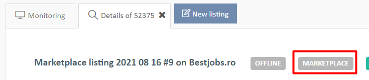
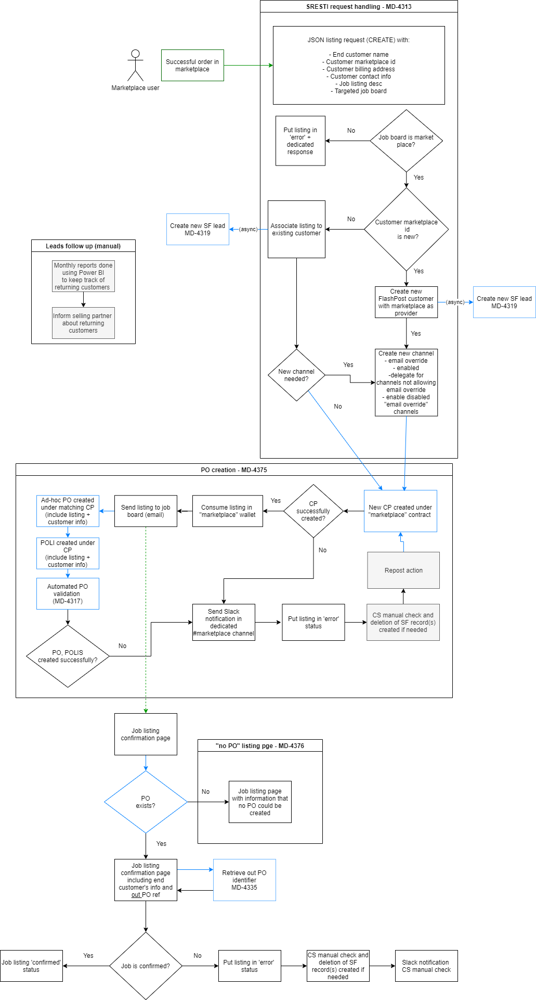

Marketplace procedure
For each job ordered via the marketplace:
- A customer is created (if the customer is ordering for the first time via marketplace channel for the same provider)
- A lead is created automatically in SalesForce
- A listing is created in FlashPost with source identified as "marketplace" 
- A new channel is automatically created for the customer (and delegated if needed)
- Job listings are sent to the partner automatically either:
- Immediately via email override
- After channel delegation if the job board doesn't accept email override (only Daijob, Appcast US & CA and Infojobs.net). IMPORTANT: marketplace listings posted on one of these job boards will be queued and sent automatically whenever the job board confirms the credentials.
- Partners are receiving the jobs using the usual method (email containing a link redirecting the user to listing details + CP and PO ref + confirmation step)
In Salesforce:
- CP for the job posted is created automatically for each marketplace listing
- In PO created automatically
- In PO validated automatically
- Out PO created automatically (and included on job listing confirmation page for inbound partner)
In case of SalesForce errors:
- Notification is sent to #marketplace channel
- Job listing is put in error status. Inbound partners are receiving FP job listing email but can't open the job listing details page and sees a dedicated error.
- In case of error notified in #marketplace channel, check in SF for potential configuration problems (missing WW, missing country, expired contract, etc)
- Delete all records that FP may have created (CP, POs)
- Repost the listing in FP
In case the job board reports an error and can't post the job for some reason:
- If not done by the partner, put the listing in ERROR
- Inform Broadbean by email of the problem (email address to be confirmed) stating the problem and asking them to refund
- Check if PO, CP, POLIS etc can be deleted in SF
See here the process flowchart :
